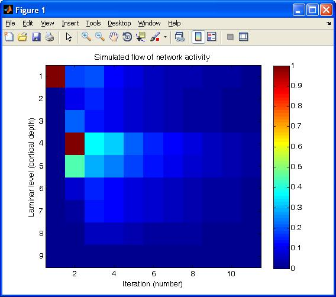

This is the readme for the matlab script associated with the paper:
Weiler N, Wood L, Yu J, Solla SA, Shepherd GM (2008) Top-down laminar
organization of the excitatory network in motor cortex.
Nat Neurosci 11:360-6
Abstract:
---------
Cortical layering is a hallmark of the mammalian neocortex and a
major determinant of local synaptic circuit organization in sensory
systems. In motor cortex, the laminar organization of cortical
circuits has not been resolved, although their input-output
operations are crucial for motor control. Here, we developed a
general approach for estimating layer-specific connectivity in
cortical circuits and applied it to mouse motor cortex. From these
data we computed a laminar presynaptic --> postsynaptic connectivity
matrix, W(post,pre), revealing a complement of stereotypic pathways
dominated by layer 2 outflow to deeper layers. Network modeling
predicted, and experiments with disinhibited slices confirmed, that
stimuli targeting upper, but not lower, cortical layers effectively
evoked network-wide events. Thus, in motor cortex, descending
excitation from a preamplifier-like network of upper-layer neurons
drives output neurons in lower layers. Our analysis provides a
quantitative wiring-diagram framework for further investigation of
the excitatory networks mediating cortical mechanisms of motor
control.
Documentation for laminarWsimulation.m script:
----------------------------------------------
Simulates the flow of activity within and across laminar levels in the
local pyramidal neuron network, based on a connectivity matrix (W)
measured by laser scanning photostimulation.
The simulation is a simple neural network simulation:
p(n) ----> c * W ----> p(n+1)
where p(n=0) is an input vector ('inputvector') representing a laminar
profile of activity, c is a global scaling constant ('gain'), W is a
measured connectivity matrix, and p(n+1) is an output vector, which is
fed back into the network as the input vector for the next iteration.
For further details, see Weiler et al., 2008, Nature Neuroscience.
2008 Gordon Shepherd, Northwestern University
Usage:
------
Type the name of the script, laminarWsimulation, at the matlab command
prompt. You should see an image that looks like:

A related model for vibrissal M1, vibrissal S1, and S2, mapped in
comparable fashion in Hooks et al (2011), is available at:
https://senselab.med.yale.edu/ModelDB/ShowModel.asp?model=137743